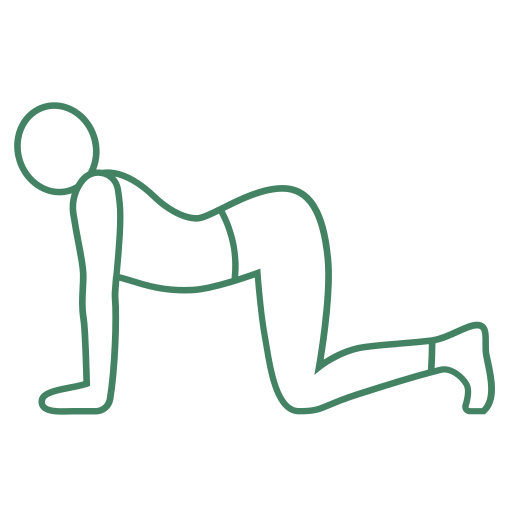

What this helps: keeps your spine loose and eases stiffness through your back.
Steps
- 1Rest on your hands and knees, with your hands under your shoulders.
- 2Slowly arch your back and lift your head to look ahead.
- 3Then round your back and gently tuck your chin toward your chest.
- 4Move slowly between the two, in time with your breath.
Flow gently for 30 seconds
30
seconds